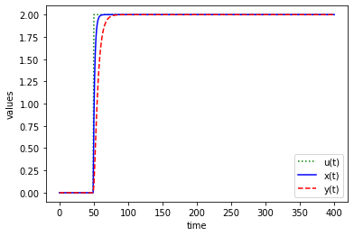
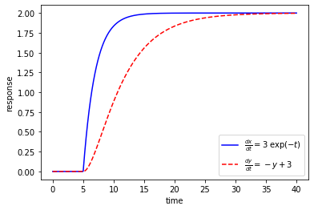

[1]:
import CactusTool
import matplotlib.pyplot as plt
import numpy as np
path = '/Users/liuyu/simulations/BH/'
sim = CactusTool.load(path)
[2]:
dset = sim.ASCII.x['H'].dataset
[3]:
dset = dset[dset.time == 0]
dset = dset[dset.rl == 1]
# dset = dset[dset.c == 5]
dset
[3]:
| it | tl | rl | c | ml | ix | iy | iz | time | x | y | z | H | |
|---|---|---|---|---|---|---|---|---|---|---|---|---|---|
| 116 | 0.0 | 0.0 | 1.0 | 2.0 | 0.0 | 1152.0 | 5888.0 | 768.0 | 0.0 | -185.0 | 0.0 | 0.0 | -9.470388e-10 |
| 117 | 0.0 | 0.0 | 1.0 | 2.0 | 0.0 | 1280.0 | 5888.0 | 768.0 | 0.0 | -180.0 | 0.0 | 0.0 | -9.484779e-10 |
| 118 | 0.0 | 0.0 | 1.0 | 2.0 | 0.0 | 1408.0 | 5888.0 | 768.0 | 0.0 | -175.0 | 0.0 | 0.0 | -9.227513e-10 |
| 119 | 0.0 | 0.0 | 1.0 | 2.0 | 0.0 | 1536.0 | 5888.0 | 768.0 | 0.0 | -170.0 | 0.0 | 0.0 | -8.599406e-10 |
| 120 | 0.0 | 0.0 | 1.0 | 2.0 | 0.0 | 1664.0 | 5888.0 | 768.0 | 0.0 | -165.0 | 0.0 | 0.0 | -7.506501e-10 |
| ... | ... | ... | ... | ... | ... | ... | ... | ... | ... | ... | ... | ... | ... |
| 204 | 0.0 | 0.0 | 1.0 | 17.0 | 0.0 | 10112.0 | 5888.0 | 768.0 | 0.0 | 165.0 | 0.0 | 0.0 | 5.222360e-11 |
| 205 | 0.0 | 0.0 | 1.0 | 17.0 | 0.0 | 10240.0 | 5888.0 | 768.0 | 0.0 | 170.0 | 0.0 | 0.0 | 4.553519e-11 |
| 206 | 0.0 | 0.0 | 1.0 | 17.0 | 0.0 | 10368.0 | 5888.0 | 768.0 | 0.0 | 175.0 | 0.0 | 0.0 | 3.991600e-11 |
| 207 | 0.0 | 0.0 | 1.0 | 17.0 | 0.0 | 10496.0 | 5888.0 | 768.0 | 0.0 | 180.0 | 0.0 | 0.0 | 3.491569e-11 |
| 208 | 0.0 | 0.0 | 1.0 | 17.0 | 0.0 | 10624.0 | 5888.0 | 768.0 | 0.0 | 185.0 | 0.0 | 0.0 | 3.013912e-11 |
93 rows × 13 columns
[4]:
from scipy.interpolate import griddata
x = np.linspace(-10, 10, 1000)
f = griddata(dset.x, dset.M2, x, method='nearest')
import matplotlib.pyplot as plt
fig, ax = plt.subplots()
ax.plot(x, f, '-')
---------------------------------------------------------------------------
AttributeError Traceback (most recent call last)
<ipython-input-4-3b8fd7969200> in <module>
1 from scipy.interpolate import griddata
2 x = np.linspace(-10, 10, 1000)
----> 3 f = griddata(dset.x, dset.M2, x, method='nearest')
4
5 import matplotlib.pyplot as plt
/usr/local/lib/python3.7/site-packages/pandas/core/generic.py in __getattr__(self, name)
5177 if self._info_axis._can_hold_identifiers_and_holds_name(name):
5178 return self[name]
-> 5179 return object.__getattribute__(self, name)
5180
5181 def __setattr__(self, name, value):
AttributeError: 'DataFrame' object has no attribute 'M2'
[ ]:
a = sorted([1., 2.])
print(a)
[ ]:
import numpy as np
X, Y = np.mgrid[0:10:101j, 0:10:101j]
positions = np.vstack([X.ravel(), Y.ravel()])
print(positions)
[ ]:
!ls /Users/liuyu/Downloads/
[ ]:
import h5py
def GWdata(file):
p = {}
with h5py.File(file, 'r') as f:
timeseries = f['strain']
for item in list(f):
print(item)
return timeseries
[ ]:
path = '/Users/liuyu/Downloads/'
file = path + 'H-H1_LOSC_4_V2-1126259446-32.hdf5'
ts = GWdata(file)
print(ts)
[ ]:
path = '/Users/liuyu/Downloads/'
file = path + 'H-H1_LOSC_4_V2-1126259446-32.hdf5'
with h5py.File(file, 'r') as f:
dset = f['strain'][0]
print(dset)
# print(np.array(dset))
# print(f['strain'])
# dset = f['strain']
# print(np.array(dset))
# for item in list(dset.attrs):
# print(item)
[5]:
[9]:
from gwpy.timeseries import TimeSeries
path = '/Users/liuyu/Downloads/'
file = path + 'H-H1_LOSC_4_V2-1126259446-32.hdf5'
data = TimeSeries.read(file, format='hdf5.losc')
print(data)
TimeSeries([2.17704028e-19, 2.08763900e-19, 2.39681183e-19, ...,
3.55365541e-20, 6.33533516e-20, 7.58121195e-20]
unit: dimensionless,
t0: 1126259446.0 s,
dt: 0.000244140625 s,
name: Strain,
channel: None)
[32]:
import numpy as np
from scipy.integrate import odeint
import matplotlib.pyplot as plt
# function that returns dz/dt
def model(z,t,u, v):
x = z[0]
y = z[1]
dxdt = (-x + u)/2.0
dydt = (-y + x)/5.0
dzdt = [dxdt,dydt]
return dzdt
# initial condition
z0 = [0,0]
# number of time points
n = 400
# time points
t = np.linspace(0,400,n)
# step input
u = np.zeros(n)
# change to 2.0 at time = 5.0
u[50:] = 2.0
# store solution
x = np.empty_like(t)
y = np.empty_like(t)
# record initial conditions
x[0] = z0[0]
y[0] = z0[1]
# solve ODE
for i in range(1,n):
# span for next time step
tspan = [t[i-1],t[i]]
# solve for next step
z = odeint(model,z0,tspan,args=(u[i],0))
# store solution for plotting
x[i] = z[1][0]
y[i] = z[1][1]
# next initial condition
z0 = z[1]
# plot results
plt.plot(t,u,'g:',label='u(t)')
plt.plot(t,x,'b-',label='x(t)')
plt.plot(t,y,'r--',label='y(t)')
plt.ylabel('values')
plt.xlabel('time')
plt.legend(loc='best')
plt.show()
PDE -> ODE -> odeint/solve_ivp/ode

[9]:
help(odeint)
Help on function odeint in module scipy.integrate.odepack:
odeint(func, y0, t, args=(), Dfun=None, col_deriv=0, full_output=0, ml=None, mu=None, rtol=None, atol=None, tcrit=None, h0=0.0, hmax=0.0, hmin=0.0, ixpr=0, mxstep=0, mxhnil=0, mxordn=12, mxords=5, printmessg=0, tfirst=False)
Integrate a system of ordinary differential equations.
.. note:: For new code, use `scipy.integrate.solve_ivp` to solve a
differential equation.
Solve a system of ordinary differential equations using lsoda from the
FORTRAN library odepack.
Solves the initial value problem for stiff or non-stiff systems
of first order ode-s::
dy/dt = func(y, t, ...) [or func(t, y, ...)]
where y can be a vector.
.. note:: By default, the required order of the first two arguments of
`func` are in the opposite order of the arguments in the system
definition function used by the `scipy.integrate.ode` class and
the function `scipy.integrate.solve_ivp`. To use a function with
the signature ``func(t, y, ...)``, the argument `tfirst` must be
set to ``True``.
Parameters
----------
func : callable(y, t, ...) or callable(t, y, ...)
Computes the derivative of y at t.
If the signature is ``callable(t, y, ...)``, then the argument
`tfirst` must be set ``True``.
y0 : array
Initial condition on y (can be a vector).
t : array
A sequence of time points for which to solve for y. The initial
value point should be the first element of this sequence.
This sequence must be monotonically increasing or monotonically
decreasing; repeated values are allowed.
args : tuple, optional
Extra arguments to pass to function.
Dfun : callable(y, t, ...) or callable(t, y, ...)
Gradient (Jacobian) of `func`.
If the signature is ``callable(t, y, ...)``, then the argument
`tfirst` must be set ``True``.
col_deriv : bool, optional
True if `Dfun` defines derivatives down columns (faster),
otherwise `Dfun` should define derivatives across rows.
full_output : bool, optional
True if to return a dictionary of optional outputs as the second output
printmessg : bool, optional
Whether to print the convergence message
tfirst: bool, optional
If True, the first two arguments of `func` (and `Dfun`, if given)
must ``t, y`` instead of the default ``y, t``.
.. versionadded:: 1.1.0
Returns
-------
y : array, shape (len(t), len(y0))
Array containing the value of y for each desired time in t,
with the initial value `y0` in the first row.
infodict : dict, only returned if full_output == True
Dictionary containing additional output information
======= ============================================================
key meaning
======= ============================================================
'hu' vector of step sizes successfully used for each time step.
'tcur' vector with the value of t reached for each time step.
(will always be at least as large as the input times).
'tolsf' vector of tolerance scale factors, greater than 1.0,
computed when a request for too much accuracy was detected.
'tsw' value of t at the time of the last method switch
(given for each time step)
'nst' cumulative number of time steps
'nfe' cumulative number of function evaluations for each time step
'nje' cumulative number of jacobian evaluations for each time step
'nqu' a vector of method orders for each successful step.
'imxer' index of the component of largest magnitude in the
weighted local error vector (e / ewt) on an error return, -1
otherwise.
'lenrw' the length of the double work array required.
'leniw' the length of integer work array required.
'mused' a vector of method indicators for each successful time step:
1: adams (nonstiff), 2: bdf (stiff)
======= ============================================================
Other Parameters
----------------
ml, mu : int, optional
If either of these are not None or non-negative, then the
Jacobian is assumed to be banded. These give the number of
lower and upper non-zero diagonals in this banded matrix.
For the banded case, `Dfun` should return a matrix whose
rows contain the non-zero bands (starting with the lowest diagonal).
Thus, the return matrix `jac` from `Dfun` should have shape
``(ml + mu + 1, len(y0))`` when ``ml >=0`` or ``mu >=0``.
The data in `jac` must be stored such that ``jac[i - j + mu, j]``
holds the derivative of the `i`th equation with respect to the `j`th
state variable. If `col_deriv` is True, the transpose of this
`jac` must be returned.
rtol, atol : float, optional
The input parameters `rtol` and `atol` determine the error
control performed by the solver. The solver will control the
vector, e, of estimated local errors in y, according to an
inequality of the form ``max-norm of (e / ewt) <= 1``,
where ewt is a vector of positive error weights computed as
``ewt = rtol * abs(y) + atol``.
rtol and atol can be either vectors the same length as y or scalars.
Defaults to 1.49012e-8.
tcrit : ndarray, optional
Vector of critical points (e.g. singularities) where integration
care should be taken.
h0 : float, (0: solver-determined), optional
The step size to be attempted on the first step.
hmax : float, (0: solver-determined), optional
The maximum absolute step size allowed.
hmin : float, (0: solver-determined), optional
The minimum absolute step size allowed.
ixpr : bool, optional
Whether to generate extra printing at method switches.
mxstep : int, (0: solver-determined), optional
Maximum number of (internally defined) steps allowed for each
integration point in t.
mxhnil : int, (0: solver-determined), optional
Maximum number of messages printed.
mxordn : int, (0: solver-determined), optional
Maximum order to be allowed for the non-stiff (Adams) method.
mxords : int, (0: solver-determined), optional
Maximum order to be allowed for the stiff (BDF) method.
See Also
--------
solve_ivp : Solve an initial value problem for a system of ODEs.
ode : a more object-oriented integrator based on VODE.
quad : for finding the area under a curve.
Examples
--------
The second order differential equation for the angle `theta` of a
pendulum acted on by gravity with friction can be written::
theta''(t) + b*theta'(t) + c*sin(theta(t)) = 0
where `b` and `c` are positive constants, and a prime (') denotes a
derivative. To solve this equation with `odeint`, we must first convert
it to a system of first order equations. By defining the angular
velocity ``omega(t) = theta'(t)``, we obtain the system::
theta'(t) = omega(t)
omega'(t) = -b*omega(t) - c*sin(theta(t))
Let `y` be the vector [`theta`, `omega`]. We implement this system
in python as:
>>> def pend(y, t, b, c):
... theta, omega = y
... dydt = [omega, -b*omega - c*np.sin(theta)]
... return dydt
...
We assume the constants are `b` = 0.25 and `c` = 5.0:
>>> b = 0.25
>>> c = 5.0
For initial conditions, we assume the pendulum is nearly vertical
with `theta(0)` = `pi` - 0.1, and is initially at rest, so
`omega(0)` = 0. Then the vector of initial conditions is
>>> y0 = [np.pi - 0.1, 0.0]
We will generate a solution at 101 evenly spaced samples in the interval
0 <= `t` <= 10. So our array of times is:
>>> t = np.linspace(0, 10, 101)
Call `odeint` to generate the solution. To pass the parameters
`b` and `c` to `pend`, we give them to `odeint` using the `args`
argument.
>>> from scipy.integrate import odeint
>>> sol = odeint(pend, y0, t, args=(b, c))
The solution is an array with shape (101, 2). The first column
is `theta(t)`, and the second is `omega(t)`. The following code
plots both components.
>>> import matplotlib.pyplot as plt
>>> plt.plot(t, sol[:, 0], 'b', label='theta(t)')
>>> plt.plot(t, sol[:, 1], 'g', label='omega(t)')
>>> plt.legend(loc='best')
>>> plt.xlabel('t')
>>> plt.grid()
>>> plt.show()
[12]:
n = 400
t = np.linspace(0,40,n)
t
[12]:
array([ 0. , 0.1, 0.2, 0.3, 0.4, 0.5, 0.6, 0.7, 0.8, 0.9, 1. ,
1.1, 1.2, 1.3, 1.4, 1.5, 1.6, 1.7, 1.8, 1.9, 2. , 2.1,
2.2, 2.3, 2.4, 2.5, 2.6, 2.7, 2.8, 2.9, 3. , 3.1, 3.2,
3.3, 3.4, 3.5, 3.6, 3.7, 3.8, 3.9, 4. , 4.1, 4.2, 4.3,
4.4, 4.5, 4.6, 4.7, 4.8, 4.9, 5. , 5.1, 5.2, 5.3, 5.4,
5.5, 5.6, 5.7, 5.8, 5.9, 6. , 6.1, 6.2, 6.3, 6.4, 6.5,
6.6, 6.7, 6.8, 6.9, 7. , 7.1, 7.2, 7.3, 7.4, 7.5, 7.6,
7.7, 7.8, 7.9, 8. , 8.1, 8.2, 8.3, 8.4, 8.5, 8.6, 8.7,
8.8, 8.9, 9. , 9.1, 9.2, 9.3, 9.4, 9.5, 9.6, 9.7, 9.8,
9.9, 10. , 10.1, 10.2, 10.3, 10.4, 10.5, 10.6, 10.7, 10.8, 10.9,
11. , 11.1, 11.2, 11.3, 11.4, 11.5, 11.6, 11.7, 11.8, 11.9, 12. ,
12.1, 12.2, 12.3, 12.4, 12.5, 12.6, 12.7, 12.8, 12.9, 13. , 13.1,
13.2, 13.3, 13.4, 13.5, 13.6, 13.7, 13.8, 13.9, 14. , 14.1, 14.2,
14.3, 14.4, 14.5, 14.6, 14.7, 14.8, 14.9, 15. , 15.1, 15.2, 15.3,
15.4, 15.5, 15.6, 15.7, 15.8, 15.9, 16. , 16.1, 16.2, 16.3, 16.4,
16.5, 16.6, 16.7, 16.8, 16.9, 17. , 17.1, 17.2, 17.3, 17.4, 17.5,
17.6, 17.7, 17.8, 17.9, 18. , 18.1, 18.2, 18.3, 18.4, 18.5, 18.6,
18.7, 18.8, 18.9, 19. , 19.1, 19.2, 19.3, 19.4, 19.5, 19.6, 19.7,
19.8, 19.9, 20. , 20.1, 20.2, 20.3, 20.4, 20.5, 20.6, 20.7, 20.8,
20.9, 21. , 21.1, 21.2, 21.3, 21.4, 21.5, 21.6, 21.7, 21.8, 21.9,
22. , 22.1, 22.2, 22.3, 22.4, 22.5, 22.6, 22.7, 22.8, 22.9, 23. ,
23.1, 23.2, 23.3, 23.4, 23.5, 23.6, 23.7, 23.8, 23.9, 24. , 24.1,
24.2, 24.3, 24.4, 24.5, 24.6, 24.7, 24.8, 24.9, 25. , 25.1, 25.2,
25.3, 25.4, 25.5, 25.6, 25.7, 25.8, 25.9, 26. , 26.1, 26.2, 26.3,
26.4, 26.5, 26.6, 26.7, 26.8, 26.9, 27. , 27.1, 27.2, 27.3, 27.4,
27.5, 27.6, 27.7, 27.8, 27.9, 28. , 28.1, 28.2, 28.3, 28.4, 28.5,
28.6, 28.7, 28.8, 28.9, 29. , 29.1, 29.2, 29.3, 29.4, 29.5, 29.6,
29.7, 29.8, 29.9, 30. , 30.1, 30.2, 30.3, 30.4, 30.5, 30.6, 30.7,
30.8, 30.9, 31. , 31.1, 31.2, 31.3, 31.4, 31.5, 31.6, 31.7, 31.8,
31.9, 32. , 32.1, 32.2, 32.3, 32.4, 32.5, 32.6, 32.7, 32.8, 32.9,
33. , 33.1, 33.2, 33.3, 33.4, 33.5, 33.6, 33.7, 33.8, 33.9, 34. ,
34.1, 34.2, 34.3, 34.4, 34.5, 34.6, 34.7, 34.8, 34.9, 35. , 35.1,
35.2, 35.3, 35.4, 35.5, 35.6, 35.7, 35.8, 35.9, 36. , 36.1, 36.2,
36.3, 36.4, 36.5, 36.6, 36.7, 36.8, 36.9, 37. , 37.1, 37.2, 37.3,
37.4, 37.5, 37.6, 37.7, 37.8, 37.9, 38. , 38.1, 38.2, 38.3, 38.4,
38.5, 38.6, 38.7, 38.8, 38.9, 39. , 39.1, 39.2, 39.3, 39.4, 39.5,
39.6, 39.7, 39.8, 39.9, 40. ])
[19]:
import numpy as np
from scipy.integrate import odeint
import matplotlib.pyplot as plt
# function that returns dz/dt
def model(z,t):
if t<5:
u=0
else:
u=2
dxdt = .5 *(-z[0]+u)
dydt = .2*(-z[1]+z[0])
dzdt = [dxdt,dydt]
return dzdt
# initial condition
z0 = [0,0]
# time points
t = np.linspace(0,40,1000)
# solve ODE
z = odeint(model,z0,t)
# plot results
plt.plot(t,z[:,0],'b-',label=r'$\frac{dx}{dt}=3 \; \exp(-t)$')
plt.plot(t,z[:,1],'r--',label=r'$\frac{dy}{dt}=-y+3$')
plt.ylabel('response')
plt.xlabel('time')
plt.legend(loc='best')
plt.show()

[ ]: